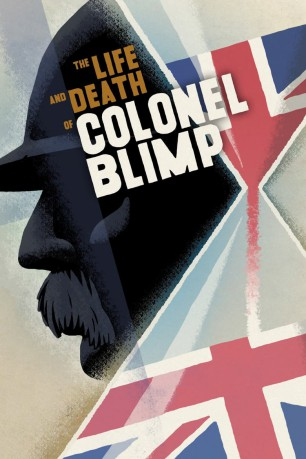

#9312 Leben und Sterben des Colonel Blimp
Alternativ: The Life and Death of Colonel Blimp
 
 IMDB-Wertung: 8.2 / 10
IMDB-Wertung: 8.2 / 10  Metascore: 0
Metascore: 0 
1902: Während eines Fronturlaubs vom Burenkrieg erfährt der englische Lieutenant Clive Wynn-Candy von einer in Deutschland tätigen Englischlehrerin, dass dort anti-englische Propaganda betrieben wird. Entgegen dem Befehl seines Vorgesetzten reist er nach Berlin, um diese Propaganda einzudämmen.
Jahr: 1943
Dauer: 164 Minuten
FSK: 12
Land: England Studio: Koch MediaTonspuren: DTS - ,
Untertitel: Deutsch,
Auflösung: 1080p (1488x1080) Größe: 8120 MB
Genre: Drama, Krieg, Liebe
Regisseur: Michael Powell, Emeric Pressburger
Drehbuch: Michael Powell
Soundtrack: Allan Gray
Darsteller:
- Anton Walbrook als Theo Kretschmar-Schuldorff
 Deborah Kerr als Edith Hunter / Barbara Wynne / Johnny Cannon
Deborah Kerr als Edith Hunter / Barbara Wynne / Johnny Cannon- Roger Livesey als Clive Candy
- Roland Culver als Colonel Betteridge
- Arthur Wontner als Embassy Counsellor
- Albert Lieven als von Ritter
- John Laurie als Murdoch
- Ursula Jeans als Frau von Kalteneck
- Valentine Dyall als von Schönborn
- Robert Harris als Embassy Secretary
- Felix Aylmer als The Bishop
- Ian Fleming als Maj. Plumley (1902) (uncredited)
 Patrick Macnee als Extra (uncredited)
Patrick Macnee als Extra (uncredited) Ferdy Mayne als Prussian Student (uncredited)
Ferdy Mayne als Prussian Student (uncredited)- George Woodbridge als Man with Debris Clearing Unit (uncredited)
- Harry Welchman als Major Davies
- James McKechnie als Spud Wilson
- Reginald Tate als van Zijl
- David Hutcheson als Hoppy
- A.E. Matthews als President of Tribunal
- Neville Mapp als Stuffy Graves
- Vincent Holman als Club Porter (1942)
- Spencer Trevor als Period Blimp
- James Knight als Club Porter (1902)
- Dennis Arundell als Café Orchestra Leader
- David Ward als Kaunitz
- Jan Van Loewen als Indignant Citizen
- Carl Jaffe als von Reumann
- Eric Maturin als Colonel Goodhead
- Frith Banbury als Baby-Face Fitzroy
- Theodore Zichy als Colonel Borg
- Jane Millican als Nurse Erna
- Phyllis Morris als Pebble
- Muriel Aked als Aunt Margaret
- W.H. Barrett als The Texan
- Thomas Palmer als The Sergeant
- Yvonne Andre als The Nun
- Marjorie Gresley als The Matron
- Helen Debroy Summers als Mrs.Wynne
- Norman Pierce als Mr. Wynne
- Edward Cooper als B.B.C. Official
- Joan Swinstead als Secretary
- John Boxer als Soldier (uncredited)
- Erik als Cocker Spaniel (1920) (uncredited)
- Desmond Jeans als Barman (uncredited)
- Diana Marshall als Sybil Hopwell (uncredited)
- Pat McGrath als Cpl. Tommy Tucker (uncredited)
- Ronald Millar als Sgt Hawkins (uncredited)
- Charles Mortimer als Dr. Crowler at Duel (uncredited)
- Pete Murray als Extra in Crowd at BBC Bunker (uncredited)
Datei: X:\1900-1949\Leben und Sterben des Colonel Blimp (1943, FSK12, 1488x1080).mkv seit 27.07.2018
Festplatte: HD 1900-1970
 Es gibt insgesamt 80 Filme in der Gruppe '1900-1949'
Es gibt insgesamt 80 Filme in der Gruppe '1900-1949'